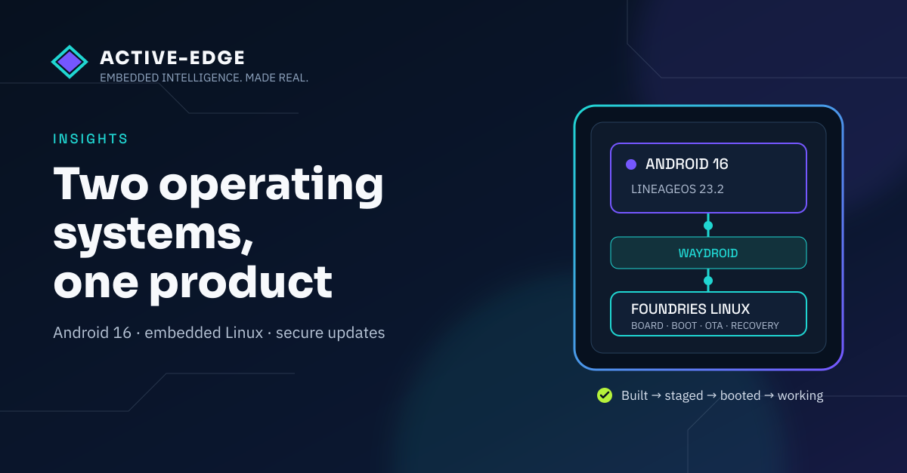

Insights · 22nd September 2026
Two operating systems, one product
What it takes to make Android 16, embedded Linux and custom NXP hardware behave like one coherent system.

Several clients have asked us the same difficult question: how do we build Android into a connected product and still stand behind its security for five years or more?
Their applications already run on Android. The immediate problem is not whether an off-the-shelf tablet can run the software today. It is whether the manufacturer can keep receiving, testing and deploying security fixes throughout the life of the product.
Their tablet suppliers cannot give them that assurance. They provide a working Android image, but not the source control, maintenance commitment or reliable update route the customer needs. When the supplied image falls out of support, the product manufacturer remains responsible for the connected product but may have no practical way to repair it.
The EU Cyber Resilience Act makes vulnerability handling and security updates part of that product obligation, with a support period of at least five years unless the product is expected to be used for less. This turns long-term Android maintenance from a useful extra into a commercial requirement.
Our answer is to own the maintainable platform on our hardware: LineageOS-based Android running through Waydroid on a Foundries Linux microPlatform host. We can build and maintain both sides, lock the sources used for a release, test the complete combination and deliver updated system images through FoundriesFactory.
That does not make an entire customer product CRA compliant by itself. Conformity belongs to the complete product, its intended use, risk assessment, processes and evidence. It does give the manufacturer something essential: a controlled route to make a support commitment, investigate vulnerabilities and deliver fixes rather than waiting for an unavailable tablet update.
Android is only one plane
“Android in a container” is a neat description, but it makes the difficult bit sound smaller than it is.
There are three independently controlled planes in the product:
- the Android system image, built from a pinned Android or LineageOS release;
- the Linux host, built with Yocto and Foundries, which owns boot, devices, update and recovery;
- the board-specific Android vendor image, which connects Android to the actual GPU, display, video and other hardware.
Each plane can build successfully while the product still fails.
An Android image built for an i.MX8M Mini cannot simply become the vendor image for an i.MX95 board. The first uses an Etnaviv graphics path. The second brings a Mali GPU, different buffer handling and a Wave6 video path. They may both be NXP application processors and they may both boot Linux, but the hardware contract presented to Android is different.
This is why we describe support as a product tuple rather than a loose collection of images. The tuple names the board, Linux image, manifest revisions, Android release, memory profile and build variant. Change one member and you have a new combination to assess.
We currently maintain explicit Android 13 and Android 16 lanes, including constrained 2 GB profiles. Android 13 remains a legacy support path. Android 16, through LineageOS 23.2, is our preferred long-life engineering baseline. That is a lifecycle decision, not a claim that Android 16 alone confers compliance.
Built is not working
We have learned to use four plain proof states:
Built → Staged → Booted → Working
Built means an exact, pinned configuration produced the expected artefacts. Staged means the right Android pair and Linux host reached the intended hardware. Booted means Android completed startup. Working means the person in front of the product can use the display and the required hardware behaves correctly.
Those distinctions stop a green CI job becoming a claim it cannot support.
On our Jaguar Screen platform, Android 13 has recorded working UI and Etnaviv graphics acceleration at 1920 × 1200. More recently, our Android 16 work reached a useful warm-reboot bench result: the Active-Edge splash remained on screen while Android started, sys.boot_completed reached 1, and LineageOS became visible without somebody manually restarting the compositor.
That is real evidence, but it has a boundary. It was a bench hotpatch result on 16th September, not yet a baked production image, an over-the-air update acceptance result or complete product sign-off. Cold boot, touch, media, memory pressure, update and rollback still need their own evidence.
The labels matter because “the container is running” is not the same thing as “the product works”.
Most failures live at the boundaries
Android and Linux have to share more than a processor.
Binder devices have to be present and handed into the container correctly. Android 16’s image APEX layout needs host support for loop devices and device mapper. The Android container lifecycle has to align with system services rather than racing them during boot.
Graphics crosses several contracts at once. Android allocates a buffer through gralloc. That buffer must be represented in a form the Linux graphics stack and GPU can import. GBM, the runtime graphics libraries and the hardware composer all need to select the same workable path. A fault in that chain can leave Android fully booted behind a black screen.
Media adds another boundary. A video codec may be present in the Linux kernel and still be useless to Android because the expected device nodes, groups or permissions are missing. On i.MX95, the Wave6 video path and Mali graphics stack are board work, not generic Android features that appear because a build completed.
Some failures are less glamorous. We have had /var fill on the Linux host, leaving Android’s system_server and network accounting services crashing in ways that initially looked like framework faults. The useful diagnostic was not another Android patch. It was free space.
This is embedded systems work: a symptom in one plane often has its cause in another.
The splash-screen handover sits across the same boundaries. Linux owns the display first. Android becomes ready later. The handover needs a defined event, a bounded wait and an observable failure. Otherwise the product flashes black, exposes boot noise or sits forever on a reassuring logo while the interface has already failed behind it.
The polished result is simple precisely because the underlying agreement is explicit.
Five years needs more than a source tree
Controlling the source is the start of a long-term support offer, not the end.
For each release lane we need immutable manifest revisions, recorded patches and hashes for the output images. We need to know which pre-built components are present, under what licence, and which vulnerability and redistribution decisions apply to them. The host and Android evidence must describe the exact pair shipped together.
That is why our build work includes source-lock checks, patch reconciliation, SBOM and NOTICE generation, binary-risk review and retained build metadata. A reused Android worktree is not allowed to drift quietly away from the release definition. A successful historical build is useful evidence, but it is not automatically reproducible provenance for the next release.
Foundries supplies the other half of the commercial proposition. Its Linux platform gives us a controlled host build, signed update metadata, over-the-air system delivery and recovery mechanisms. We can pair that host with the maintained Android release, qualify the complete tuple, then move tested fixes to products already in the field.
The important word is can. A viable update route does not replace the work of monitoring vulnerabilities, deciding what affects the product, rebuilding, testing and supporting the customer. It makes that work possible.
This is the gap clients are asking us to close. They do not merely need Android on a screen. They need somebody able to stand behind the software platform for the declared life of the product, with evidence and an update path when something changes.
One product at the glass
There will always be complexity behind a connected display. The aim is not to pretend it has disappeared. The aim is to control it.
We want the Android application team to work in a familiar environment. We want Linux to do what it is good at: deterministic board support, boot, recovery, security services and fleet update. We want the hardware acceleration in the NXP device to remain available rather than falling back to a generic software-only demonstration. We want each release to be identifiable, testable and supportable for the period the customer has committed to.
And at the glass, we want none of that structure to leak out as a confused product.
The screen should show one deliberate splash, then one usable Android interface. Behind it should be a chain of controlled sources, board-specific integration, release evidence and a real route for the next security update.
That is the business case for two operating systems behaving like one product.